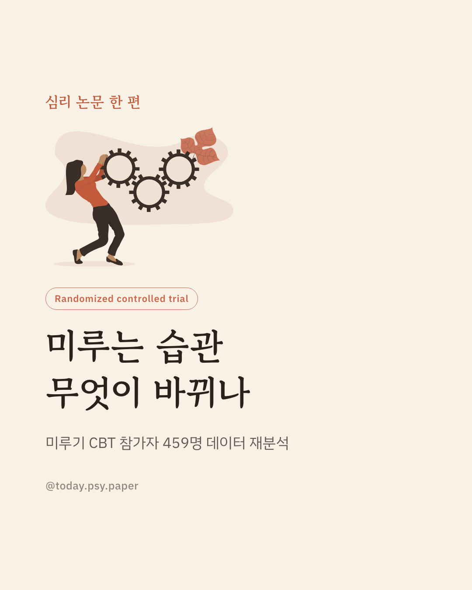
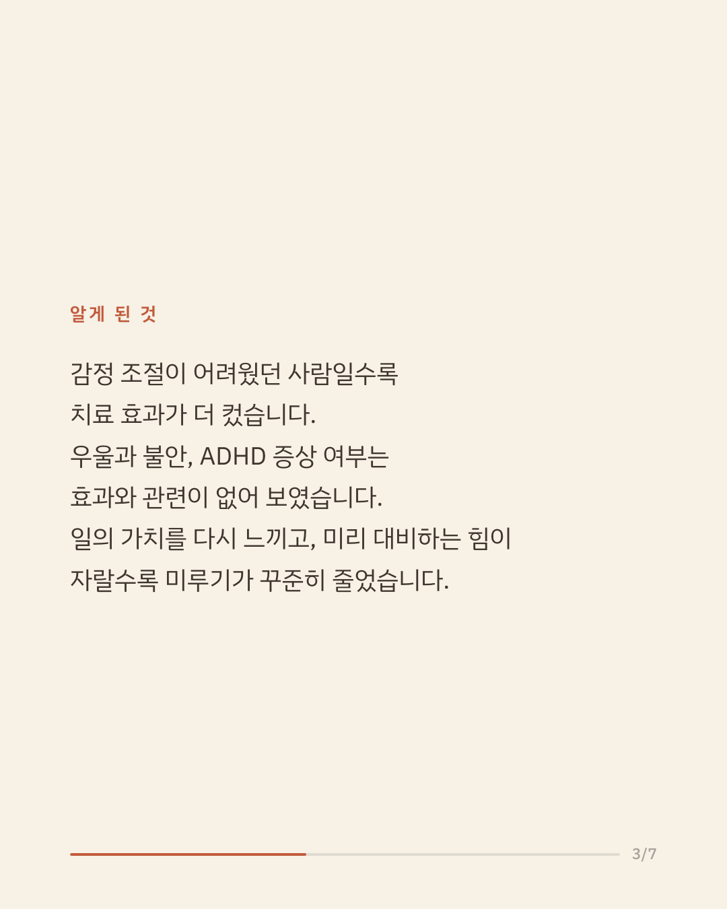
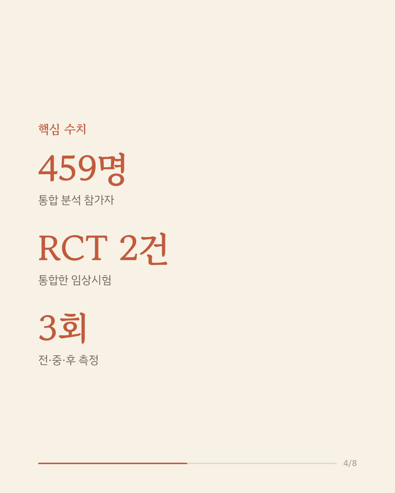
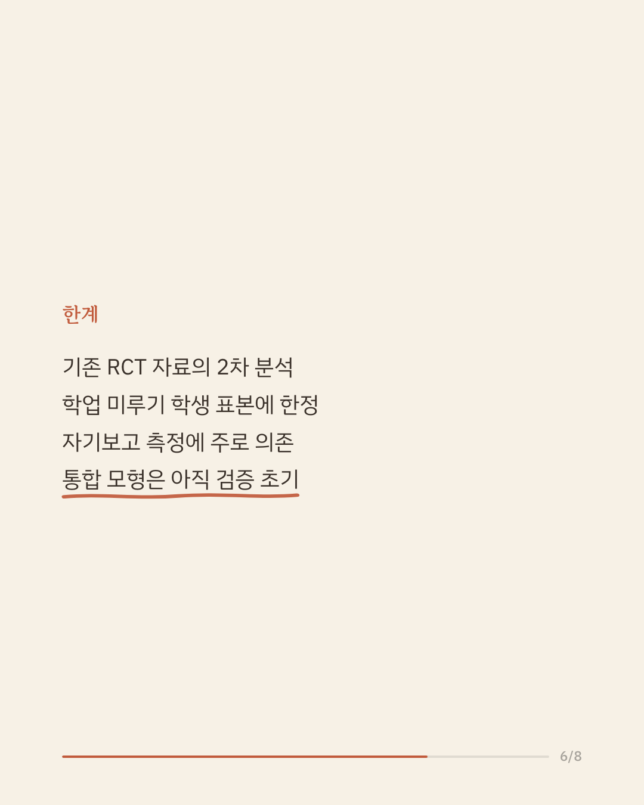
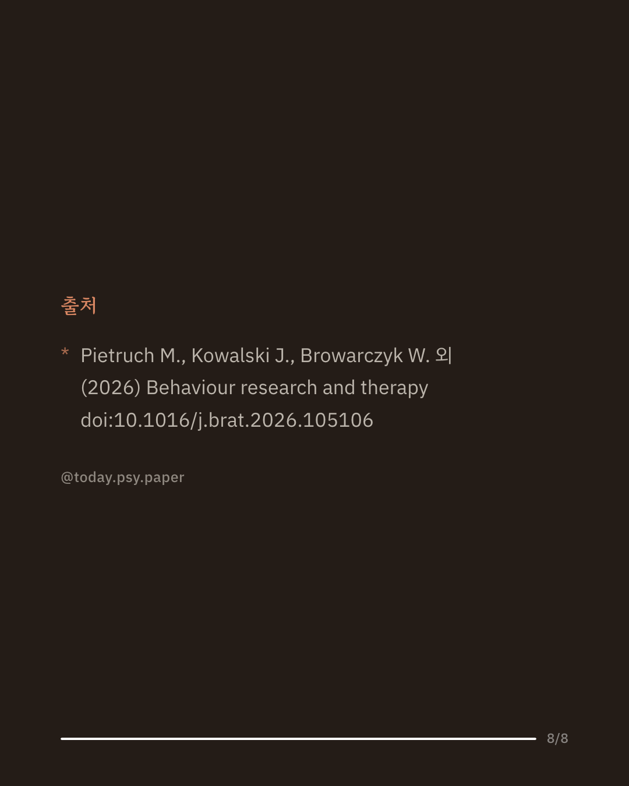

할 일을 자꾸 미루는 습관은 흔한 자기조절의 어려움이며, 삶의 질을 떨어뜨리기도 합니다. 인지행동치료(CBT)는 미루기에 가장 유력한 개입으로 꼽히지만, 누구에게 잘 듣는지와 무엇이 변화를 이끄는지는 분명하지 않았습니다. 연구진은 학업 미루기 CBT와 대기자 대조군을 비교한 무작위 대조시험 두 건의 데이터를 합쳐 참가자 459명을 대상으로, 개입 전·중·후 세 시점의 자료를 종단 매개모형으로 분석했습니다. 그 결과 기저의 정서조절 어려움이 클수록 개입 효과가 더 컸고, 우울·불안·ADHD 증상은 결과를 좌우하지 않았습니다. 변화의 기제로는 과제의 가치를 더 크게 느끼고 능동적으로 통제하는 힘이 커지는 것이 미루기 감소를 매개했으며, 과제와 관련된 긍정 정서 증가와 부정 정서 감소, 끈기와 감정 명료성의 향상도 관련이 있었습니다. 이는 CBT가 폭넓은 대상에게 적용될 수 있고, 과제 관련 정서와 자기조절을 겨냥하면 개입을 더 다듬을 수 있음을 시사합니다. 다만 기존 시험 자료를 다시 분석한 연구이고 학생 표본에 한정되며 자기보고 측정에 주로 의존했습니다. 단일 연구이므로 확대 해석은 조심해야 합니다. 출처: Behaviour Research and Therapy (2026). #임상심리 #인지행동치료 #정신건강정보 #심리학연구 #미루기
python3 publish.py 42424684